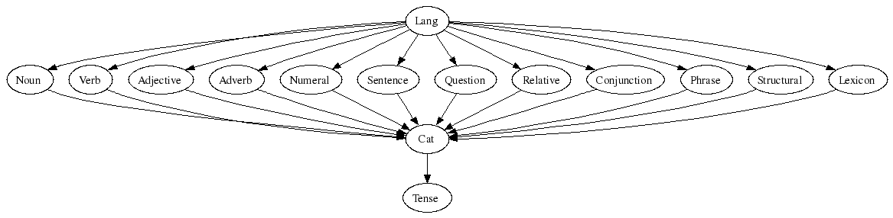

Purpose
Background
Coverage
Structure
How to use
How to implement a new language
How to extend the API
High-level access to grammatical rules
E.g. You have k new messages rendered in ten languages X
render X (Have (You (Number (k (New Message)))))
Usability for different purposes
Often in NLP, a grammar is just high-level code for a parser.
But writing a grammar can be inadequate for parsing:
Moreover, a grammar fine-tuned for parsing may not be reusable
Linguistic ontology: abstract syntax
E.g. adjectival modification
AdjCN : AP -> CN -> CN ;
Rendering in different languages: concrete syntax
Resource grammars have generation perspective, rather than parsing
Division of labour: resource grammars hide linguistic details
AdjCN : AP -> CN -> CN hides agreement, word order,...
Presentation: "school grammar" concepts, dictionary-like conventions
bird_N = reg2N "Vogel" "Vögel" masculine
API = Application Programmer's Interface
Documentation: gfdoc
IDE = Interactive Development Environment (forthcoming)
Example-based grammar writing
render Ita (parse Eng "you have k messages")
Linguistics
Computer science
2002: v. 0.2
2003: v. 0.6
2005: v. 0.9
2006: v. 1.0
Janna Khegai (Russian modules, forthcoming), Bjorn Bringert (many Swadesh lexica), Inger Andersson and Therese Söderberg (Spanish morphology), Ludmilla Bogavac (Russian morphology), Carlos Gonzalia (Spanish cardinals), Partik Jansson (Swedish cardinals), Aarne Ranta.
We are grateful for contributions and comments to several other people who have used this and the previous versions of the resource library, including Ana Bove, David Burke, Lauri Carlson, Gloria Casanellas, Karin Cavallin, Hans-Joachim Daniels, Kristofer Johannisson, Anni Laine, Wanjiku Ng'ang'a, Jordi Saludes.
CLE (Core Language Engine, Book 1992)
Rosetta Machine Translation (Book 1994)
The current GF Resource Project covers ten languages:
Danish
English
Finnish
French
German
Italian
Norwegian (bokmål)
Russian
Spanish
Swedish
In addition, parts (morphology) of Arabic, Estonian, Latin, and Urdu
API 1.0 not yet implemented for Danish and Russian
Complete inflection engine
Basic lexicon
It is more important to enable lexicon extensions than to provide a huge lexicon.
Texts: sequences of phrases with punctuation
Phrases: declaratives, questions, imperatives, vocatives
Tense, mood, and polarity: present, past, future, conditional ; simultaneous, anterior ; positive, negative
Questions: yes-no, "wh" ; direct, indirect
Clauses: main, relative, embedded (subject, object, adverbial)
Verb phrases: intransitive, transitive, ditransitive, prepositional
Noun phrases: proper names, pronouns, determiners, possessives, cardinals and ordinals
67 categories
150 abstract syntax combination rules
100 structural words
340 content words in a test lexicon
35 kLines of source code (4/3/2006):
abstract 1131
english 2344
german 2386
finnish 3396
norwegian 1257
swedish 1465
scandinavian 1023
french 3246 -- Besch + Irreg + Morpho 2111
italian 7797 -- Besch 6512
spanish 7120 -- Besch 5877
romance 1066

John walks.
TFullStop : Phr -> Text -> Text | TQuestMark, TExclMark
(PhrUtt : PConj -> Utt -> Voc -> Phr | PhrYes, PhrNo, ...
NoPConj | but_PConj, ...
(UttS : S -> Utt | UttQS, UttImp, UttNP, ...
(UseCl : Tense -> Anter -> Pol -> Cl -> S
TPres
ASimul
PPos
(PredVP : NP -> VP -> Cl | ImpersNP, ExistNP, ...
(UsePN : PN -> NP
john_PN)
(UseV : V -> VP | ComplV2, UseComp, ...
walk_V))))
NoVoc) | VocNP, please_Voc, ...
TEmpty
Every language implements these regular patterns that take "dictionary forms" as arguments.
regN : Str -> N
regA : Str -> A
regV : Str -> V
Their usefulness varies. For instance, they all are quite good in Finnish and English. In Swedish, less so:
regN "val" ---> val, valen, valar, valarna
Initializing a lexicon with regXs is
usually a good starting point in grammar development.
In Swedish, giving the gender of N improves a lot
regGenN "val" neutrum ---> val, valet, val, valen
There are also special constructs taking other forms:
mk2N : (nyckel,nycklar : Str) -> N
mk1N : (bilarna : Str) -> N
irregV : (dricka, drack, druckit : Str) -> V
Regular verbs are actually implemented the Lexin way
regV : (talar : Str) -> N
To cover all situations, worst-case paradigms are given. E.g. Swedish
mkN : (apa,apan,apor,aporna : Str) -> N
mkA : (liten, litet, lilla, små, mindre, minst, minsta : Str) -> A
mkV : (supa,super,sup,söp,supit,supen : Str) -> V
Iregular words in IrregX, e.g. Swedish:
draga_V : V =
mkV (variants { "dra"; "draga"}) (variants { "drar" ; "drager"})
(variants { "dra" ; "drag" }) "drog" "dragit" "dragen" ;
Goal: eliminate the user's need of worst-case functions.
Syntactic structures that are not shared by all languages.
Not implemented yet.
Candidates:
Nor post-possessives: bilen min
Fre question forms: est-ce que tu dors ?
Mathematical
Multimodal
Present
Minimal
Shallow
It is a good idea to compile the library, so that it can be opened faster
GF/lib/resource-1.0% make
writes GF/lib/alltenses
GF/lib/present
GF/lib/resource-1.0/langs.gfcm
If you don't intend to change the library, you never need to process the source files again. Just do some of
gf -nocf langs.gfcm -- all 8 languages
gf -nocf -path=alltenses:prelude alltenses/LangSwe.gfc -- Swedish only
gf -nocf -path=alltenses:prelude present/LangSwe.gfc -- Swedish only, present tense only
The default parser does not work!
The MCFG parser works in some languages, after waiting appr. 20 seconds
p -mcfg -lang=LangEng -cat=S "I would see her"
p -mcfg -lang=LangSwe -cat=S "jag skulle se henne"
Parsing in present/ versions is quicker.
Multilingual treebank entry = tree + linearizations
Some examples on treebank generation, assuming langs.gfcm
gr -cat=S -number=10 -cf | tb -- 10 random S
gt -cat=Phr -depth=4 | tb -xml | wf ex.xml -- all Phr to depth 4, into file ex.xml
Regression testing
rf ex.xml | tb -c -- read treebank from file and compare to present grammars
Updating a treebank
rf old.xml | tb -trees | tb -xml | wf new.xml -- read old from file, write new to file
Brute-force method that helps if real parsing is more expensive.
make treebank -- make treebank with all languages
gf -treebank langs.xml -- start GF by reading the treebank
> ut -strings -treebank=LangIta -- show all Ita strings
> ut -treebank=LangIta -raw "Quello non si romperebbe" -- look up a string
> i -nocf langs.gfcm -- read grammar to be able to linearize
> ut -treebank=LangIta "Quello non si romperebbe" | l -multi -- translate to all
Use morphological analyser
gf -nocf -retain -path=alltenses:prelude alltenses/LangSwe.gf
> ma "jag kan inte höra vad du säger"
Try out a morphology quiz
> mq -cat=V
Try out inflection patterns
gf -retain -path=alltenses:prelude alltenses/ParadigmsSwe.gfr
> cc regV "lyser"
We start a demo by
gfeditor langs.gfcm
Get rid of discontinuous constituents
Examples: mathematical/Predication, examples/bronzeage
The application grammar is implemented with reference to the resource API
Individual languages are instantiations
Example: tram
Instead of parametrized modules:
select resource functions differently for different languages
Example: imperative vs. infinitive in mathematical exercises
Lexicon in language-dependent moduls
Combination rules in a parametrized module
Example: animal